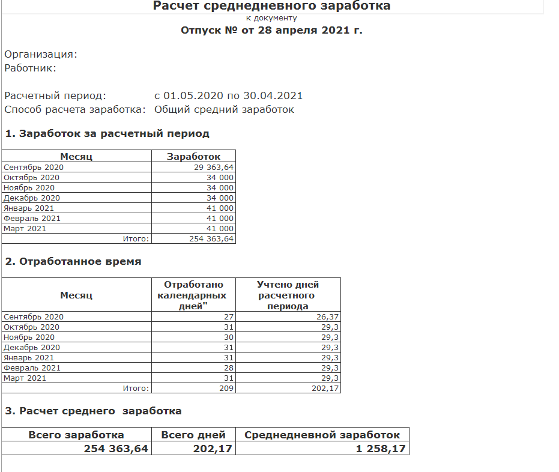

При неделе отпуска (7 дней с субботой и воскресеньем) доход за этот месяц будет приблизительно стандартным. Возможны небольшие отклонения в несколько сотен рублей в большую или меньшую сторону.
Регламент отпусков
28 календарных дней, график, разделение на части и как планировать отпуск с учётом оплаты
Планируйте отпуск заранее: 14 дней обязательно без перерыва, остальные 14 дней — в любой комбинации.
В отделе действует внутреннее правило: нельзя брать отпуск в месяцы пикового потока клиентов — с середины августа до начала октября и с января до начала февраля.
Общие правила
- Отпуск — это 28 календарных дней отдыха. Рабочий год состоит из 11 месяцев работы и 28 дней отпуска.
- В первый год работы можно получить первые 14 дней отпуска спустя 6 месяцев сотрудничества и ещё 14 дней спустя 11 месяцев сотрудничества.
- Во второй и последующие годы сотрудничества отпуск предоставляется в любое время в течение года.
- Отпуск можно взять на 28 календарных дней либо разделить на части.
- Одна из частей отпуска должна быть минимум 14 календарных дней.
- Вторую часть можно разбить хоть по одному дню. Например, можно выбрать только будние 14 дней (но не в течение одного месяца). Если сотрудник уже взял условные 3 дня отпуска в определённом месяце, он не может больше брать одиночные дни в этом месяце.
- Не важно, в какой очередности сотрудник возьмёт эти две части отпуска.
- Отпуск может быть оформлен с любого дня недели, кроме выходных и праздничных дней.
- В течение 1 года работы сотрудник должен обязательно отгулять свои 28 календарных дней отпуска. Не разрешено откладывать отпуск с целью накопления дней или получения денежной компенсации.
- График отпусков утверждается на следующий год до 15 декабря текущего года. Каждый сотрудник должен заранее обдумать и сообщить даты отпуска до 7 декабря.
- Даты отпусков обсуждаются внутри отдела и согласовываются с руководителем.
- Руководитель внутри отдела может запретить брать отпуск в определённые месяцы года.
- О переносе даты отпуска, если в этом впоследствии возникнет необходимость, можно договориться и внести изменения в график отпусков — по производственной необходимости или по семейным обстоятельствам. Потребуется заявление с указанием причины. Уведомить о переносе нужно не менее чем за 5 календарных дней — бухгалтерии необходимо заранее произвести расчёт и выплату отпускных.
- Если сотрудник заболел во время отпуска, отпуск продлевается либо, по заявлению сотрудника, переносится.
- При увольнении сотруднику выплачивается компенсация за неиспользованный отпуск либо делается удержание из расчёта, если отпуск был взят с избытком.
- Отпуск совместителей предоставляется одновременно с отпуском по основному месту работы. Если на работе по совместительству работник не отработал шести месяцев, отпуск предоставляется авансом.
- Отпускные выплачиваются не позднее трёх дней до начала отпуска.
Особенности расчёта отпускных
Что важно знать при планировании отпуска:
- В течение обычного рабочего месяца оплачиваются только рабочие дни. В течение отпуска оплачивается каждый календарный день, в том числе выходные. Стоимость одного отпускного дня меньше, чем стоимость одного рабочего дня по окладу — формулы подсчёта разные.
- Следовательно, размер отпускных (а также доход за месяц, в котором вы берёте отпуск) зависит от конфигурации дней отпуска на неделе. Сумма отпускных определяется умножением среднедневного заработка на число календарных дней отпуска.
Примеры
Если брать сразу 2–3 недели отпуска в одном месяце, оплата за этот месяц будет несколько выше стандартной.
Если брать 1–5 дней отпуска без субботы и воскресенья, ожидайте меньшую сумму за этот месяц. При 1 дне потеря дохода некритична; наибольшая — при 5 днях без выходных.
- Если хотите сохранять привычную сумму дохода, лучше брать отпуск минимум неделю с субботой и воскресеньем.
- Если хотите выбрать отпуск максимально рабочими днями, будьте готовы к потере в сумме заработка.

Перед отпуском: что сделать на смене
Перед отпуском передайте коллегам актуальный контекст по сделкам и заявкам, чтобы клиенты не «зависли», а после возвращения можно было быстро войти в ритм.
- Согласуйте даты отпуска с руководителем по принятому в отделе порядку.
- Закройте или передайте срочные задачи в amoCRM — без «висящих» просроченных без комментария.
- Обновите примечания и задачи в АМО на актуальные по активным сделкам — коллегам будет проще подхватить (см. блок в «Работа с заявками»).
- Проверьте свои заявки в ЛК — нет ли статусов, которые вводят в заблуждение (например, устаревший «в подборе», если работа завершена).
- Если на вас висят клиенты с назначенным ВУ в период отпуска — заранее согласуйте с координатором или руководителем передачу или дожмите критичные касания.
На время отпуска
- Входящие по вашим сделкам распределяются по правилам этапа (на ответственного или на смену) — убедитесь, что в сделках указан корректный ответственный.
- Коллеги ориентируются на примечания, задачи и этапы в amoCRM — чем подробнее вы их оставили, тем меньше вопросов в чатах.
После отпуска
- Прочитайте все новости в чате «Новости Координация» за период отсутствия (с реакциями на посты).
- Просмотрите переданные сделки и заявки — что изменилось, какие задачи открыты.
- Вернитесь к регламенту смены: «Доброе утро», отчёт в конце дня — см. «Регламент рабочего дня».
Совет: Точные сроки подачи заявления на отпуск и кадровые вопросы уточняйте у руководителя и HR — в блоке выше собраны правила по отпуску и отпускным, ниже — рабочие действия по CRM, ЛК и коммуникации в команде.